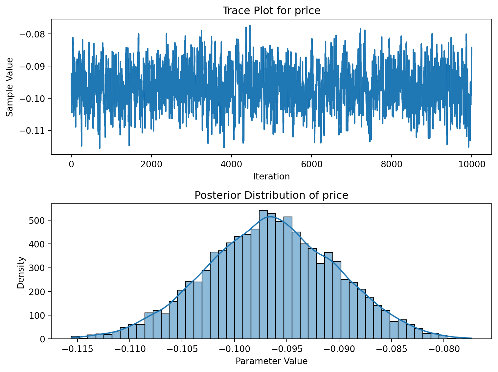

This assignment expores two methods for estimating the MNL model: (1) via Maximum Likelihood, and (2) via a Bayesian approach using a Metropolis-Hastings MCMC algorithm.
1. Likelihood for the Multi-nomial Logit (MNL) Model
Suppose we have \(i=1,\ldots,n\) consumers who each select exactly one product \(j\) from a set of \(J\) products. The outcome variable is the identity of the product chosen \(y_i \in \{1, \ldots, J\}\) or equivalently a vector of \(J-1\) zeros and \(1\) one, where the \(1\) indicates the selected product. For example, if the third product was chosen out of 3 products, then either \(y=3\) or \(y=(0,0,1)\) depending on how we want to represent it. Suppose also that we have a vector of data on each product \(x_j\) (eg, brand, price, etc.).
We model the consumer’s decision as the selection of the product that provides the most utility, and we’ll specify the utility function as a linear function of the product characteristics:
\[ U_{ij} = x_j'\beta + \epsilon_{ij} \]
where \(\epsilon_{ij}\) is an i.i.d. extreme value error term.
The choice of the i.i.d. extreme value error term leads to a closed-form expression for the probability that consumer \(i\) chooses product \(j\):
A clever way to write the individual likelihood function for consumer \(i\) is the product of the \(J\) probabilities, each raised to the power of an indicator variable (\(\delta_{ij}\)) that indicates the chosen product:
We will simulate data from a conjoint experiment about video content streaming services. We elect to simulate 100 respondents, each completing 10 choice tasks, where they choose from three alternatives per task. For simplicity, there is not a “no choice” option; each simulated respondent must select one of the 3 alternatives.
Each alternative is a hypothetical streaming offer consistent of three attributes: (1) brand is either Netflix, Amazon Prime, or Hulu; (2) ads can either be part of the experience, or it can be ad-free, and (3) price per month ranges from $4 to $32 in increments of $4.
The part-worths (ie, preference weights or beta parameters) for the attribute levels will be 1.0 for Netflix, 0.5 for Amazon Prime (with 0 for Hulu as the reference brand); -0.8 for included adverstisements (0 for ad-free); and -0.1*price so that utility to consumer \(i\) for hypothethical streaming service \(j\) is
where the variables are binary indicators and \(\varepsilon\) is Type 1 Extreme Value (ie, Gumble) distributed.
The following code provides the simulation of the conjoint data.
Note
Show code
import pandas as pdimport numpy as npimport itertools# set seed for reproducibilitynp.random.seed(123)# define attributesbrand = ["N", "P", "H"] # Netflix, Prime, Huluad = ["Yes", "No"]price =list(range(8, 33, 4)) # 8 to 32 by 4# generate all possible profiles (cartesian product)profiles = pd.DataFrame(list(itertools.product(brand, ad, price)), columns=["brand", "ad", "price"])m =len(profiles)# assign part-worth utilities (true parameters)b_util = {"N": 1.0, "P": 0.5, "H": 0.0}a_util = {"Yes": -0.8, "No": 0.0}p_util =lambda p: -0.1* p# number of respondents, tasks, and alternatives per taskn_peeps =100n_tasks =10n_alts =3# simulate one respondentdef sim_one(id): datlist = []for t inrange(1, n_tasks +1): sampled = profiles.sample(n=n_alts).copy() sampled["resp"] =id sampled["task"] = t sampled["v"] = ( sampled["brand"].map(b_util) + sampled["ad"].map(a_util) + sampled["price"].apply(p_util) ).round(10)# Gumbel noise (Type I extreme value) sampled["e"] =-np.log(-np.log(np.random.uniform(size=n_alts))) sampled["u"] = sampled["v"] + sampled["e"] sampled["choice"] = (sampled["u"] == sampled["u"].max()).astype(int) datlist.append(sampled)return pd.concat(datlist)# simulate all respondentsconjoint_data = pd.concat([sim_one(i) for i inrange(1, n_peeps +1)], ignore_index=True)# keep only observable columnsconjoint_data = conjoint_data[["resp", "task", "brand", "ad", "price", "choice"]]# previewconjoint_data.head()
resp
task
brand
ad
price
choice
0
1
1
P
No
32
0
1
1
1
N
No
28
0
2
1
1
N
No
24
1
3
1
2
H
No
28
0
4
1
2
H
No
8
1
3. Preparing the Data for Estimation
The “hard part” of the MNL likelihood function is organizing the data, as we need to keep track of 3 dimensions (consumer \(i\), covariate \(k\), and product \(j\)) instead of the typical 2 dimensions for cross-sectional regression models (consumer \(i\) and covariate \(k\)). The fact that each task for each respondent has the same number of alternatives (3) helps. In addition, we need to convert the categorical variables for brand and ads into binary variables.
To prepare the data for estimation, we convert the categorical variables brand and ad into binary indicators (dummy variables). We use Hulu and No as the reference categories, so brand_Netflix, brand_Prime, and ad_included represent the incremental utility relative to these baselines.
The resulting dataset contains one row per alternative (i.e., product option) within each choice task, and includes variables for respondent ID, task number, price, dummy-coded features, and whether the alternative was chosen (choice = 1) or not.
The estimated coefficients from the MNL model align well with the true utility parameters used in simulation. Specifically:
Consumers show a strong preference for Netflix (𝛽 ≈ 1.06) and a moderate preference for Amazon Prime (𝛽 ≈ 0.47), relative to the baseline Hulu.
Including advertisements significantly reduces utility (𝛽 ≈ −0.77), while price has a clear negative effect (𝛽 ≈ −0.097).
All estimated coefficients are statistically significant, and the 95% confidence intervals do not include zero.
These results confirm that the maximum likelihood estimation procedure is successfully recovering the part-worth utilities used in data generation. The signs, magnitudes, and confidence intervals all support the intended interpretation of the MNL model.
These results validate the use of MLE in recovering the underlying part-worth utilities and lay the foundation for further comparisons with Bayesian approaches.
5. Estimation via Bayesian Methods
To estimate the posterior distribution of the part-worth utility parameters, we implement a Metropolis-Hastings MCMC algorithm. We assume independent normal priors: \(\mathcal{N}(0,5)\) for the binary variables (brand and ad), and \(\mathcal{N}(0,1)\) for the price coefficient. The posterior is evaluated in log-space as the sum of the log-likelihood and log-prior.
We run 11,000 MCMC iterations, discarding the first 1,000 as burn-in and retaining 10,000 draws for inference. The proposal distribution consists of four independent normal steps: three \(\mathcal{N}(0, 0.05)\) for the binary variables and one \(\mathcal{N}(0, 0.005)\) for the price coefficient.
The posterior means are closely aligned with the true parameter values used in the data generation process. All posterior standard deviations are small, indicating precise estimates. These results suggest that the MCMC sampler has successfully converged and provides reliable inference about the underlying utility parameters.
Show code
import matplotlib.pyplot as pltimport seaborn as sns# Select parameter to visualizeparam ="price"samples = trace_df[param]# Plot trace + histogram side by sidefig, axes = plt.subplots(2, 1, figsize=(8, 6))# Trace plotaxes[0].plot(samples)axes[0].set_title(f"Trace Plot for {param}")axes[0].set_xlabel("Iteration")axes[0].set_ylabel("Sample Value")# Histogramsns.histplot(samples, kde=True, ax=axes[1])axes[1].set_title(f"Posterior Distribution of {param}")axes[1].set_xlabel("Parameter Value")axes[1].set_ylabel("Density")plt.tight_layout()plt.show()

Interpretation:
The trace plot (top) shows stable mixing behavior of the MCMC sampler for the price coefficient. The chain fluctuates around a consistent level with no evidence of divergence, suggesting good convergence.
The posterior distribution (bottom) is tightly centered near the true data-generating value and exhibits low posterior uncertainty. These visual diagnostics support the reliability of the Bayesian estimation for this parameter.
Show code
mle_estimates = {"brand_Netflix": [1.056892, 0.117582],"brand_Prime": [0.473296, 0.107848],"ad_included": [-0.772385, 0.094258],"price": [-0.096418, 0.006060]}posterior_summary = trace_df.agg(["mean", "std", lambda x: x.quantile(0.025), lambda x: x.quantile(0.975)]).Tposterior_summary.columns = ["Posterior_Mean", "Posterior_SD", "CI_lower", "CI_upper"]posterior_summary["MLE_Estimate"] = [mle_estimates[var][0] for var in posterior_summary.index]posterior_summary["MLE_SE"] = [mle_estimates[var][1] for var in posterior_summary.index]posterior_summary
Posterior_Mean
Posterior_SD
CI_lower
CI_upper
MLE_Estimate
MLE_SE
brand_Netflix
1.046777
0.107879
0.842035
1.267174
1.056892
0.117582
brand_Prime
0.458422
0.107113
0.252498
0.668790
0.473296
0.107848
ad_included
-0.766680
0.093519
-0.950807
-0.586036
-0.772385
0.094258
price
-0.096486
0.006237
-0.108719
-0.084282
-0.096418
0.006060
Interpretation:
The posterior means are nearly identical to the MLE point estimates, and the posterior standard deviations are consistent with the frequentist standard errors. The 95% credible intervals closely resemble the MLE confidence intervals, confirming that the Bayesian estimates recover the same underlying part-worth utilities as the MLE approach.
This agreement is expected given the relatively uninformative priors and large sample size. The results provide additional validation of the MNL model’s reliability using both estimation frameworks.
6. Discussion
Interpreting Parameter Estimates Without Knowing the Data-Generating Process
If we had not simulated the data, we would interpret the estimated coefficients as reflecting real consumer preferences inferred from observed choices.
The fact that \(\beta_{\text{Netflix}} > \beta_{\text{Prime}}\) suggests that consumers value Netflix more highly than Prime, relative to the baseline Hulu.
The negative \(\beta_{\text{price}}\) confirms that consumers are price-sensitive, with higher prices lowering the probability of choice.
The negative coefficient on ad inclusion implies a strong preference for ad-free experiences.
Overall, the signs and magnitudes of the estimates align with plausible economic and behavioral expectations, even without knowledge of the underlying data-generating mechanism.
Simulating and Estimating a Hierarchical (Multi-Level) Model
To simulate data from a more realistic model, we could assume that each respondent has their own set of utility parameters \(\beta_i\), drawn from a population-level distribution: \[
\beta_i \sim \mathcal{N}(\mu, \Sigma)
\]
This hierarchical model accounts for respondent-level heterogeneity and allows us to estimate both individual and population-level preferences.
To estimate such a model, we would: - Simulate individual-level \(\beta_i\) during data generation, - Use hierarchical Bayesian methods (e.g., Gibbs sampling or Hamiltonian MCMC) to infer both \(\mu\) and \(\Sigma\), - Possibly rely on probabilistic programming tools like Stan or PyMC.
This is the standard approach when analyzing real-world conjoint data, where individual preferences naturally vary across people.
Source Code
---title: "Multinomial Logit Model"author: "Kehang Qin"date: today---This assignment expores two methods for estimating the MNL model: (1) via Maximum Likelihood, and (2) via a Bayesian approach using a Metropolis-Hastings MCMC algorithm. ## 1. Likelihood for the Multi-nomial Logit (MNL) ModelSuppose we have $i=1,\ldots,n$ consumers who each select exactly one product $j$ from a set of $J$ products. The outcome variable is the identity of the product chosen $y_i \in \{1, \ldots, J\}$ or equivalently a vector of $J-1$ zeros and $1$ one, where the $1$ indicates the selected product. For example, if the third product was chosen out of 3 products, then either $y=3$ or $y=(0,0,1)$ depending on how we want to represent it. Suppose also that we have a vector of data on each product $x_j$ (eg, brand, price, etc.). We model the consumer's decision as the selection of the product that provides the most utility, and we'll specify the utility function as a linear function of the product characteristics:$$ U_{ij} = x_j'\beta + \epsilon_{ij} $$where $\epsilon_{ij}$ is an i.i.d. extreme value error term. The choice of the i.i.d. extreme value error term leads to a closed-form expression for the probability that consumer $i$ chooses product $j$:$$ \mathbb{P}_i(j) = \frac{e^{x_j'\beta}}{\sum_{k=1}^Je^{x_k'\beta}} $$For example, if there are 3 products, the probability that consumer $i$ chooses product 3 is:$$ \mathbb{P}_i(3) = \frac{e^{x_3'\beta}}{e^{x_1'\beta} + e^{x_2'\beta} + e^{x_3'\beta}} $$A clever way to write the individual likelihood function for consumer $i$ is the product of the $J$ probabilities, each raised to the power of an indicator variable ($\delta_{ij}$) that indicates the chosen product:$$ L_i(\beta) = \prod_{j=1}^J \mathbb{P}_i(j)^{\delta_{ij}} = \mathbb{P}_i(1)^{\delta_{i1}} \times \ldots \times \mathbb{P}_i(J)^{\delta_{iJ}}$$Notice that if the consumer selected product $j=3$, then $\delta_{i3}=1$ while $\delta_{i1}=\delta_{i2}=0$ and the likelihood is:$$ L_i(\beta) = \mathbb{P}_i(1)^0 \times \mathbb{P}_i(2)^0 \times \mathbb{P}_i(3)^1 = \mathbb{P}_i(3) = \frac{e^{x_3'\beta}}{\sum_{k=1}^3e^{x_k'\beta}} $$The joint likelihood (across all consumers) is the product of the $n$ individual likelihoods:$$ L_n(\beta) = \prod_{i=1}^n L_i(\beta) = \prod_{i=1}^n \prod_{j=1}^J \mathbb{P}_i(j)^{\delta_{ij}} $$And the joint log-likelihood function is:$$ \ell_n(\beta) = \sum_{i=1}^n \sum_{j=1}^J \delta_{ij} \log(\mathbb{P}_i(j)) $$## 2. Simulate Conjoint DataWe will simulate data from a conjoint experiment about video content streaming services. We elect to simulate 100 respondents, each completing 10 choice tasks, where they choose from three alternatives per task. For simplicity, there is not a "no choice" option; each simulated respondent must select one of the 3 alternatives. Each alternative is a hypothetical streaming offer consistent of three attributes: (1) brand is either Netflix, Amazon Prime, or Hulu; (2) ads can either be part of the experience, or it can be ad-free, and (3) price per month ranges from \$4 to \$32 in increments of \$4.The part-worths (ie, preference weights or beta parameters) for the attribute levels will be 1.0 for Netflix, 0.5 for Amazon Prime (with 0 for Hulu as the reference brand); -0.8 for included adverstisements (0 for ad-free); and -0.1*price so that utility to consumer $i$ for hypothethical streaming service $j$ is $$u_{ij} = (1 \times Netflix_j) + (0.5 \times Prime_j) + (-0.8*Ads_j) - 0.1\times Price_j + \varepsilon_{ij}$$where the variables are binary indicators and $\varepsilon$ is Type 1 Extreme Value (ie, Gumble) distributed.The following code provides the simulation of the conjoint data.:::: {.callout-note collapse="true"}```{python}import pandas as pdimport numpy as npimport itertools# set seed for reproducibilitynp.random.seed(123)# define attributesbrand = ["N", "P", "H"] # Netflix, Prime, Huluad = ["Yes", "No"]price =list(range(8, 33, 4)) # 8 to 32 by 4# generate all possible profiles (cartesian product)profiles = pd.DataFrame(list(itertools.product(brand, ad, price)), columns=["brand", "ad", "price"])m =len(profiles)# assign part-worth utilities (true parameters)b_util = {"N": 1.0, "P": 0.5, "H": 0.0}a_util = {"Yes": -0.8, "No": 0.0}p_util =lambda p: -0.1* p# number of respondents, tasks, and alternatives per taskn_peeps =100n_tasks =10n_alts =3# simulate one respondentdef sim_one(id): datlist = []for t inrange(1, n_tasks +1): sampled = profiles.sample(n=n_alts).copy() sampled["resp"] =id sampled["task"] = t sampled["v"] = ( sampled["brand"].map(b_util) + sampled["ad"].map(a_util) + sampled["price"].apply(p_util) ).round(10)# Gumbel noise (Type I extreme value) sampled["e"] =-np.log(-np.log(np.random.uniform(size=n_alts))) sampled["u"] = sampled["v"] + sampled["e"] sampled["choice"] = (sampled["u"] == sampled["u"].max()).astype(int) datlist.append(sampled)return pd.concat(datlist)# simulate all respondentsconjoint_data = pd.concat([sim_one(i) for i inrange(1, n_peeps +1)], ignore_index=True)# keep only observable columnsconjoint_data = conjoint_data[["resp", "task", "brand", "ad", "price", "choice"]]# previewconjoint_data.head()```::::## 3. Preparing the Data for EstimationThe "hard part" of the MNL likelihood function is organizing the data, as we need to keep track of 3 dimensions (consumer $i$, covariate $k$, and product $j$) instead of the typical 2 dimensions for cross-sectional regression models (consumer $i$ and covariate $k$). The fact that each task for each respondent has the same number of alternatives (3) helps. In addition, we need to convert the categorical variables for brand and ads into binary variables.To prepare the data for estimation, we convert the categorical variables `brand` and `ad` into binary indicators (dummy variables). We use `Hulu` and `No` as the reference categories, so `brand_Netflix`, `brand_Prime`, and `ad_included` represent the incremental utility relative to these baselines.The resulting dataset contains one row per alternative (i.e., product option) within each choice task, and includes variables for respondent ID, task number, price, dummy-coded features, and whether the alternative was chosen (`choice = 1`) or not.```{python}#| code-fold: trueX = pd.get_dummies(conjoint_data, columns=["brand", "ad"], drop_first=True)# RenameX = X.rename(columns={"brand_N": "brand_Netflix","brand_P": "brand_Prime","ad_Yes": "ad_included"})X = X[["resp", "task", "price", "brand_Netflix", "brand_Prime", "ad_included", "choice"]]X.head()```## 4. Estimation via Maximum Likelihood```{python}#| code-fold: truefeatures = ["brand_Netflix", "brand_Prime", "ad_included", "price"]X_design = X[features].valuesy = X["choice"].valuesdef neg_log_likelihood(beta): Xb = X_design @ beta df = X.copy() df["Xb"] = Xb df["exp_Xb"] = np.exp(Xb) df["sum_exp_Xb"] = df.groupby(["resp", "task"])["exp_Xb"].transform("sum") df["p"] = df["exp_Xb"] / df["sum_exp_Xb"] log_lik = np.log(df["p"][df["choice"] ==1])return-np.sum(log_lik)```::: {.callout-note title="Interpretation:"}The estimated coefficients from the MNL model align well with the true utility parameters used in simulation. Specifically:- Consumers show a strong preference for Netflix (𝛽 ≈ 1.06) and a moderate preference for Amazon Prime (𝛽 ≈ 0.47), relative to the baseline Hulu.- Including advertisements significantly reduces utility (𝛽 ≈ −0.77), while price has a clear negative effect (𝛽 ≈ −0.097).- All estimated coefficients are statistically significant, and the 95% confidence intervals do not include zero.These results confirm that the maximum likelihood estimation procedure is successfully recovering the part-worth utilities used in data generation. The signs, magnitudes, and confidence intervals all support the intended interpretation of the MNL model.:::```{python}#| code-fold: truefrom scipy.optimize import minimizeX[["brand_Netflix", "brand_Prime", "ad_included"]] = X[["brand_Netflix", "brand_Prime", "ad_included"]].astype(int)#Build design matrix and responsefeatures = ["brand_Netflix", "brand_Prime", "ad_included", "price"]X_design = X[features].values # shape: (3000, 4)y = X["choice"].values # shape: (3000,)def neg_log_likelihood(beta): beta = np.asarray(beta)if beta.ndim !=1or beta.shape[0] != X_design.shape[1]:raiseValueError(f"Invalid beta shape: {beta.shape}, expected ({X_design.shape[1]},)") Xb = X_design @ beta exp_Xb = np.exp(Xb) df = pd.DataFrame({"resp": X["resp"].values,"task": X["task"].values,"choice": y,"exp_Xb": exp_Xb }) df["sum_exp_Xb"] = df.groupby(["resp", "task"])["exp_Xb"].transform("sum") df["p"] = df["exp_Xb"] / df["sum_exp_Xb"] log_lik = np.log(df["p"][df["choice"] ==1])return-np.sum(log_lik)# optimizationinit_beta = np.zeros(X_design.shape[1])res = minimize(neg_log_likelihood, init_beta, method="BFGS")# Extract resultsbeta_hat = res.xcov = res.hess_invse = np.sqrt(np.diag(cov))z =1.96ci_lower = beta_hat - z * seci_upper = beta_hat + z * se#Summary tablesummary_df = pd.DataFrame({"coef": beta_hat,"std_err": se,"CI_lower": ci_lower,"CI_upper": ci_upper}, index=features)summary_df```These results validate the use of MLE in recovering the underlying part-worth utilities and lay the foundation for further comparisons with Bayesian approaches.## 5. Estimation via Bayesian MethodsTo estimate the posterior distribution of the part-worth utility parameters, we implement a Metropolis-Hastings MCMC algorithm. We assume independent normal priors: $\mathcal{N}(0,5)$ for the binary variables (brand and ad), and $\mathcal{N}(0,1)$ for the price coefficient. The posterior is evaluated in log-space as the sum of the log-likelihood and log-prior.We run 11,000 MCMC iterations, discarding the first 1,000 as burn-in and retaining 10,000 draws for inference. The proposal distribution consists of four independent normal steps: three $\mathcal{N}(0, 0.05)$ for the binary variables and one $\mathcal{N}(0, 0.005)$ for the price coefficient.```{python}#| code-fold: true# Design matrix and responsefeatures = ["brand_Netflix", "brand_Prime", "ad_included", "price"]X_design = X[features].astype(float).valuesy = X["choice"].valuesresp = X["resp"].valuestask = X["task"].values# Prior std devs: binary ~ N(0,5), price ~ N(0,1)prior_sd = np.array([5, 5, 5, 1])proposal_sd = np.array([0.05, 0.05, 0.05, 0.005]) # Log-likelihood function (same as MLE)def log_likelihood(beta): Xb = X_design @ beta exp_Xb = np.exp(Xb) df = pd.DataFrame({"resp": resp,"task": task,"choice": y,"exp_Xb": exp_Xb }) df["sum_exp_Xb"] = df.groupby(["resp", "task"])["exp_Xb"].transform("sum") df["p"] = df["exp_Xb"] / df["sum_exp_Xb"]return np.sum(np.log(df.loc[df["choice"] ==1, "p"]))# Log-priordef log_prior(beta):return-0.5* np.sum((beta / prior_sd) **2)# Log-posteriordef log_posterior(beta):return log_likelihood(beta) + log_prior(beta)# Metropolis-Hastings samplerdef metropolis_hastings(init_beta, steps): beta = init_beta trace = [] accepted =0 current_lp = log_posterior(beta)for step inrange(steps): proposal = beta + np.random.normal(0, proposal_sd) proposal_lp = log_posterior(proposal) log_accept_ratio = proposal_lp - current_lpif np.log(np.random.rand()) < log_accept_ratio: beta = proposal current_lp = proposal_lp accepted +=1 trace.append(beta.copy()) trace = np.array(trace) accept_rate = accepted / stepsreturn trace, accept_rate# Run 11,000 steps as requiredtrace, acc_rate = metropolis_hastings(np.zeros(4), steps=11000)# Discard first 1000 (burn-in)trace_post = trace[1000:]# Convert trace to DataFrame and show posterior summarytrace_df = pd.DataFrame(trace_post, columns=features)trace_df.describe().T```The posterior means are closely aligned with the true parameter values used in the data generation process. All posterior standard deviations are small, indicating precise estimates. These results suggest that the MCMC sampler has successfully converged and provides reliable inference about the underlying utility parameters.```{python}#| code-fold: trueimport matplotlib.pyplot as pltimport seaborn as sns# Select parameter to visualizeparam ="price"samples = trace_df[param]# Plot trace + histogram side by sidefig, axes = plt.subplots(2, 1, figsize=(8, 6))# Trace plotaxes[0].plot(samples)axes[0].set_title(f"Trace Plot for {param}")axes[0].set_xlabel("Iteration")axes[0].set_ylabel("Sample Value")# Histogramsns.histplot(samples, kde=True, ax=axes[1])axes[1].set_title(f"Posterior Distribution of {param}")axes[1].set_xlabel("Parameter Value")axes[1].set_ylabel("Density")plt.tight_layout()plt.show()```::: {.callout-note title="Interpretation:"}The trace plot (top) shows stable mixing behavior of the MCMC sampler for the `price` coefficient. The chain fluctuates around a consistent level with no evidence of divergence, suggesting good convergence.The posterior distribution (bottom) is tightly centered near the true data-generating value and exhibits low posterior uncertainty. These visual diagnostics support the reliability of the Bayesian estimation for this parameter.:::```{python}#| code-fold: truemle_estimates = {"brand_Netflix": [1.056892, 0.117582],"brand_Prime": [0.473296, 0.107848],"ad_included": [-0.772385, 0.094258],"price": [-0.096418, 0.006060]}posterior_summary = trace_df.agg(["mean", "std", lambda x: x.quantile(0.025), lambda x: x.quantile(0.975)]).Tposterior_summary.columns = ["Posterior_Mean", "Posterior_SD", "CI_lower", "CI_upper"]posterior_summary["MLE_Estimate"] = [mle_estimates[var][0] for var in posterior_summary.index]posterior_summary["MLE_SE"] = [mle_estimates[var][1] for var in posterior_summary.index]posterior_summary```::: {.callout-note title="Interpretation:"}The posterior means are nearly identical to the MLE point estimates, and the posterior standard deviations are consistent with the frequentist standard errors. The 95% credible intervals closely resemble the MLE confidence intervals, confirming that the Bayesian estimates recover the same underlying part-worth utilities as the MLE approach.This agreement is expected given the relatively uninformative priors and large sample size. The results provide additional validation of the MNL model's reliability using both estimation frameworks.:::## 6. Discussion::: {.callout-note title="Interpreting Parameter Estimates Without Knowing the Data-Generating Process"}If we had not simulated the data, we would interpret the estimated coefficients as reflecting real consumer preferences inferred from observed choices.- The fact that $\beta_{\text{Netflix}} > \beta_{\text{Prime}}$ suggests that consumers value Netflix more highly than Prime, relative to the baseline Hulu.- The negative $\beta_{\text{price}}$ confirms that consumers are price-sensitive, with higher prices lowering the probability of choice.- The negative coefficient on ad inclusion implies a strong preference for ad-free experiences.Overall, the signs and magnitudes of the estimates align with plausible economic and behavioral expectations, even without knowledge of the underlying data-generating mechanism.:::::: {.callout-note title="Simulating and Estimating a Hierarchical (Multi-Level) Model"}To simulate data from a more realistic model, we could assume that each respondent has their own set of utility parameters $\beta_i$, drawn from a population-level distribution:$$\beta_i \sim \mathcal{N}(\mu, \Sigma)$$This hierarchical model accounts for respondent-level heterogeneity and allows us to estimate both individual and population-level preferences.To estimate such a model, we would:- Simulate individual-level $\beta_i$ during data generation,- Use hierarchical Bayesian methods (e.g., Gibbs sampling or Hamiltonian MCMC) to infer both $\mu$ and $\Sigma$,- Possibly rely on probabilistic programming tools like `Stan` or `PyMC`.This is the standard approach when analyzing real-world conjoint data, where individual preferences naturally vary across people.:::